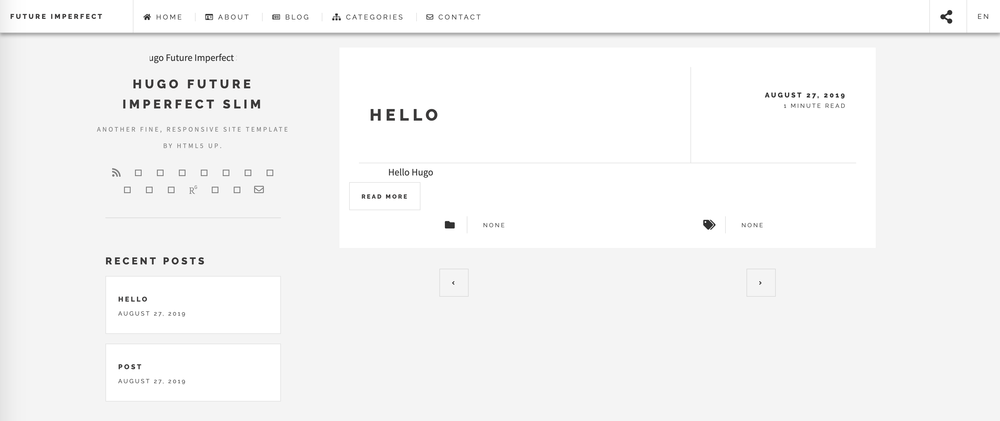
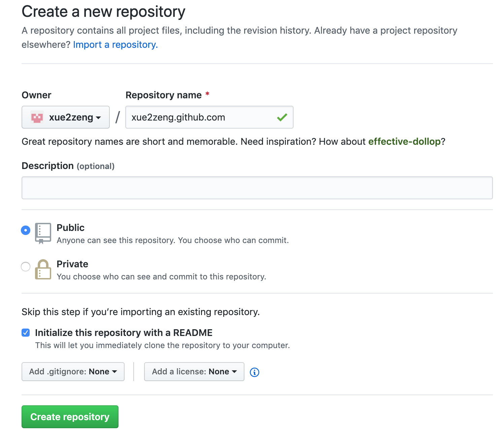
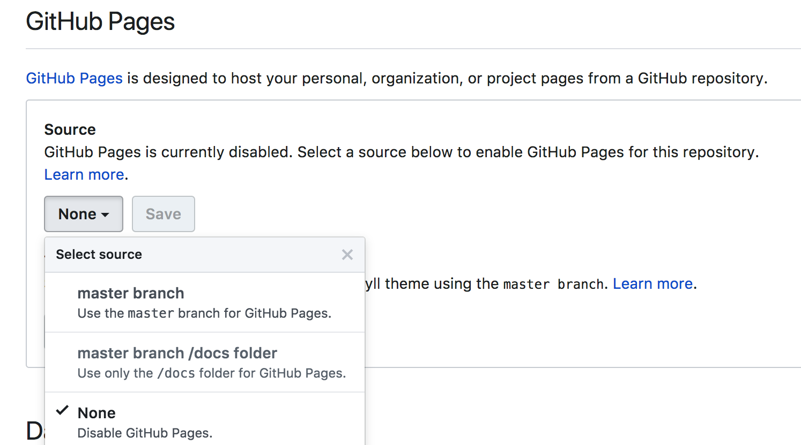

<!DOCTYPE html>
<html lang="en" itemscope itemtype="http://schema.org/WebPage">
  <head>
    

  <meta charset="utf-8" />
  <meta http-equiv="X-UA-Compatible" content="IE=edge">
  <meta name="viewport" content="width=device-width, initial-scale=1.0, maximum-scale=1.0">

  <title>Hugo结合Github搭建博客 - Xue.Zeng</title>
  <meta property="og:title" content="Hugo结合Github搭建博客" />
  <meta name="twitter:title" content="Hugo结合Github搭建博客" />
  <meta name="description" content="Hugo">
  <meta property="og:description" content="Hugo">
  <meta name="twitter:description" content="Hugo"><script type="application/ld+json">
{
    "@context": "http://schema.org",
    "@type": "WebSite",
    "name": "Xue.Zeng",
    
    "url": "https:\/\/xue2zeng.github.io\/"
}
</script><script type="application/ld+json">
{
  "@context": "http://schema.org",
  "@type": "Organization",
  "name": "",
  "url": "https:\/\/xue2zeng.github.io\/"
  
  
  
  
}
</script>
<script type="application/ld+json">
{
  "@context": "http://schema.org",
  "@type": "BreadcrumbList",
  "itemListElement": [{
        "@type": "ListItem",
        "position": 1,
        "item": {
          "@id": "https:\/\/xue2zeng.github.io\/",
          "name": "home"
        }
    },{
        "@type": "ListItem",
        "position": 3,
        "item": {
          "@id": "https:\/\/xue2zeng.github.io\/post\/toolkit\/hugo%E7%BB%93%E5%90%88github\/",
          "name": "Hugo结合 github搭建博客"
        }
    }]
}
</script><script type="application/ld+json">
{
  "@context": "http://schema.org",
  "@type": "Article",
  "author": {
    "name" : ""
  },
  "headline": "Hugo结合Github搭建博客",
  "description" : "安装Hugo macOS环境 brew install hugo # 检测安装成功 hugo version Hugo Static Site Generator v0.55.6\/extended darwin\/amd64 BuildDate: 2019-08-26T15:23:01Z 生成站点 使用hugo创建blog站点 hugo new site blog cd blog # 目录结构 tree blog #blog #├── archetypes",
  "inLanguage" : "en",
  "wordCount":  769 ,
  "datePublished" : "2019-08-26T18:36:09",
  "dateModified" : "2019-08-26T18:36:09",
  "image" : "https:\/\/xue2zeng.github.io\/img\/avatar-icon.png",
  "keywords" : [ "Hugo" ],
  "mainEntityOfPage" : "https:\/\/xue2zeng.github.io\/post\/toolkit\/hugo%E7%BB%93%E5%90%88github\/",
  "publisher" : {
    "@type": "Organization",
    "name" : "https:\/\/xue2zeng.github.io\/",
    "logo" : {
        "@type" : "ImageObject",
        "url" : "https:\/\/xue2zeng.github.io\/img\/avatar-icon.png",
        "height" :  60 ,
        "width" :  60
    }
  }
}
</script>

<meta property="og:title" content="Hugo结合Github搭建博客" />
<meta property="og:description" content="Hugo">
<meta property="og:image" content="https://xue2zeng.github.io/img/avatar-icon.png" />
<meta property="og:url" content="https://xue2zeng.github.io/post/toolkit/hugo%E7%BB%93%E5%90%88github/" />
<meta property="og:type" content="website" />
<meta property="og:site_name" content="Xue.Zeng" />

  <meta name="twitter:title" content="Hugo结合Github搭建博客" />
  <meta name="twitter:description" content="Hugo">
  <meta name="twitter:image" content="https://xue2zeng.github.io/img/avatar-icon.png" />
  <meta name="twitter:card" content="summary" />
  <link href='https://xue2zeng.github.io/img/favicon.ico' rel='icon' type='image/x-icon'/>
  <meta property="og:image" content="https://xue2zeng.github.io/img/avatar-icon.png" />
  <meta name="twitter:image" content="https://xue2zeng.github.io/img/avatar-icon.png" />
  <meta name="twitter:card" content="summary" />
  <meta property="og:url" content="https://xue2zeng.github.io/post/toolkit/hugo%E7%BB%93%E5%90%88github/" />
  <meta property="og:type" content="website" />
  <meta property="og:site_name" content="Xue.Zeng" />

  <meta name="generator" content="Hugo 0.55.6" />
  <link rel="alternate" href="https://xue2zeng.github.io/index.xml" type="application/rss+xml" title="Xue.Zeng"><link rel="stylesheet" href="https://cdnjs.cloudflare.com/ajax/libs/KaTeX/0.10.0/katex.min.css" integrity="sha384-9eLZqc9ds8eNjO3TmqPeYcDj8n+Qfa4nuSiGYa6DjLNcv9BtN69ZIulL9+8CqC9Y" crossorigin="anonymous">
  <link rel="stylesheet" href="https://use.fontawesome.com/releases/v5.5.0/css/all.css" integrity="sha384-B4dIYHKNBt8Bc12p+WXckhzcICo0wtJAoU8YZTY5qE0Id1GSseTk6S+L3BlXeVIU" crossorigin="anonymous">
  <link rel="stylesheet" href="https://maxcdn.bootstrapcdn.com/bootstrap/3.3.7/css/bootstrap.min.css" integrity="sha384-BVYiiSIFeK1dGmJRAkycuHAHRg32OmUcww7on3RYdg4Va+PmSTsz/K68vbdEjh4u" crossorigin="anonymous"><link rel="stylesheet" href="https://xue2zeng.github.io/css/main.css" /><link rel="stylesheet" href="https://fonts.googleapis.com/css?family=Lora:400,700,400italic,700italic" />
  <link rel="stylesheet" href="https://fonts.googleapis.com/css?family=Open+Sans:300italic,400italic,600italic,700italic,800italic,400,300,600,700,800" />
  <link rel="stylesheet" href="https://xue2zeng.github.io/css/highlight.min.css" /><link rel="stylesheet" href="https://xue2zeng.github.io/css/codeblock.css" /><link rel="stylesheet" href="https://cdnjs.cloudflare.com/ajax/libs/photoswipe/4.1.2/photoswipe.min.css" integrity="sha384-h/L2W9KefUClHWaty3SLE5F/qvc4djlyR4qY3NUV5HGQBBW7stbcfff1+I/vmsHh" crossorigin="anonymous">
  <link rel="stylesheet" href="https://cdnjs.cloudflare.com/ajax/libs/photoswipe/4.1.2/default-skin/default-skin.min.css" integrity="sha384-iD0dNku6PYSIQLyfTOpB06F2KCZJAKLOThS5HRe8b3ibhdEQ6eKsFf/EeFxdOt5R" crossorigin="anonymous">


  </head>
  <body>
    <nav class="navbar navbar-default navbar-fixed-top navbar-custom">
  <div class="container-fluid">
    <div class="navbar-header">
      <button type="button" class="navbar-toggle" data-toggle="collapse" data-target="#main-navbar">
        <span class="sr-only">Toggle navigation</span>
        <span class="icon-bar"></span>
        <span class="icon-bar"></span>
        <span class="icon-bar"></span>
      </button>
      <a class="navbar-brand" href="https://xue2zeng.github.io/">Xue.Zeng</a>
    </div>

    <div class="collapse navbar-collapse" id="main-navbar">
      <ul class="nav navbar-nav navbar-right">
        
          
            <li>
              <a title="About" href="/about">About</a>
            </li>
          
        
          
            <li>
              <a title="Tags" href="/tags">Tags</a>
            </li>
          
        

        

        
      </ul>
    </div>

    
      <div class="avatar-container">
        <div class="avatar-img-border">
          <a title="Xue.Zeng" href="https://xue2zeng.github.io/">
            
          </a>
        </div>
      </div>
    

  </div>
</nav>


    


<div class="pswp" tabindex="-1" role="dialog" aria-hidden="true">

<div class="pswp__bg"></div>

<div class="pswp__scroll-wrap">
    
    <div class="pswp__container">
      <div class="pswp__item"></div>
      <div class="pswp__item"></div>
      <div class="pswp__item"></div>
    </div>
    
    <div class="pswp__ui pswp__ui--hidden">
    <div class="pswp__top-bar">
      
      <div class="pswp__counter"></div>
      <button class="pswp__button pswp__button--close" title="Close (Esc)"></button>
      <button class="pswp__button pswp__button--share" title="Share"></button>
      <button class="pswp__button pswp__button--fs" title="Toggle fullscreen"></button>
      <button class="pswp__button pswp__button--zoom" title="Zoom in/out"></button>
      
      
      <div class="pswp__preloader">
        <div class="pswp__preloader__icn">
          <div class="pswp__preloader__cut">
            <div class="pswp__preloader__donut"></div>
          </div>
        </div>
      </div>
    </div>
    <div class="pswp__share-modal pswp__share-modal--hidden pswp__single-tap">
      <div class="pswp__share-tooltip"></div>
    </div>
    <button class="pswp__button pswp__button--arrow--left" title="Previous (arrow left)">
    </button>
    <button class="pswp__button pswp__button--arrow--right" title="Next (arrow right)">
    </button>
    <div class="pswp__caption">
      <div class="pswp__caption__center"></div>
    </div>
    </div>
    </div>
</div>


  
  
  


  

  <header class="header-section ">
    
    <div class="intro-header no-img">
      <div class="container">
        <div class="row">
          <div class="col-lg-8 col-lg-offset-2 col-md-10 col-md-offset-1">
            <div class="post-heading">
              
                <h1>Hugo结合Github搭建博客</h1>
              
              
              
                
                  <h2 class="post-subheading">Hugo</h2>
                
              
              
                <span class="post-meta">
  
  
  <i class="fas fa-calendar"></i>&nbsp;Posted on 2019-08-26
  
  
    &nbsp;|&nbsp;<i class="fas fa-clock"></i>&nbsp;2&nbsp;minutes
  
  
    &nbsp;|&nbsp;<i class="fas fa-book"></i>&nbsp;769&nbsp;words
  
  
    &nbsp;|&nbsp;<i class="fas fa-user"></i>&nbsp;
  
  
</span>


              
            </div>
          </div>
        </div>
      </div>
    </div>
  </header>


    
<div class="container" role="main">
  <div class="row">
    <div class="col-lg-8 col-lg-offset-2 col-md-10 col-md-offset-1">
      <article role="main" class="blog-post">
        

<h4 id="安装hugo">安装Hugo</h4>

<ul>
<li>macOS环境</li>
</ul>
<div class="highlight"><pre class="chroma"><code class="language-text" data-lang="text">  brew install hugo
  # 检测安装成功
  hugo version
  Hugo Static Site Generator v0.55.6/extended darwin/amd64 BuildDate: 2019-08-26T15:23:01Z</code></pre></div>
<h4 id="生成站点">生成站点</h4>

<ul>
<li>使用hugo创建blog站点</li>
</ul>
<div class="highlight"><pre class="chroma"><code class="language-bash" data-lang="bash">  hugo new site blog
  <span class="nb">cd</span> blog
  <span class="c1"># 目录结构</span>
  tree blog
  <span class="c1">#blog</span>
  <span class="c1">#├── archetypes</span>
  <span class="c1">#│   └── default.md</span>
  <span class="c1">#├── config.toml</span>
  <span class="c1">#├── content</span>
  <span class="c1">#├── data</span>
  <span class="c1">#├── layouts</span>
  <span class="c1">#├── static</span>
  <span class="c1">#└── themes</span></code></pre></div>
<blockquote>
<p>archetypes：包括内容类型，在创建新内容时自动生成内容的配置</p>

<p>config.toml：是网站的配置文件，包含一些基本配置和主题特有的配置</p>

<p>content：包括网站内容，全部使用markdown格式</p>

<p>data：存放自定义模版，导入的toml文件（或json，yaml）</p>

<p>layouts：包括了网站的模版，决定内容如何呈现</p>

<p>static：包括了css, js, fonts, media等，决定网站的外观</p>

<p>themes：用于存放主题，可以去官方<a href="https://themes.gohugo.io/下载喜欢的主题">https://themes.gohugo.io/下载喜欢的主题</a></p>
</blockquote>

<ul>
<li>安装主题</li>
</ul>
<div class="highlight"><pre class="chroma"><code class="language-bash" data-lang="bash">  git init
  git submodule add https://github.com/pacollins/hugo-future-imperfect-slim.git themes/hugo-future-imperfect-slim</code></pre></div>
<p>在 config.toml 中配置 <code>theme = &quot;hugo-future-imperfect-slim&quot;</code></p>

<ul>
<li>创建博客日志，最好将md文件放在content的post目录</li>
</ul>
<div class="highlight"><pre class="chroma"><code class="language-bash" data-lang="bash">  hugo new post/hello.md</code></pre></div>
<p>复制themes/hugo-future-imperfect-slim/exampleSite/config.toml至当前config.toml</p>

<ul>
<li>效果预览</li>
</ul>
<div class="highlight"><pre class="chroma"><code class="language-bash" data-lang="bash">  hugo server --theme<span class="o">=</span>hugo-future-imperfect-slim --buildDrafts --watch</code></pre></div>
<p>访问<a href="http://localhost:1313/，可以看到如下效果">http://localhost:1313/，可以看到如下效果</a></p>

<p></p>

<h4 id="部署到-github-pages">部署到 GitHub Pages</h4>

<p>Github Pages 是 Github 推出的一项功能，可以免费托管静态网站，将你的静态文件放在仓库里，然后在仓库的 <code>Settings</code> 里面，翻到下面的 <code>GitHub Pages</code> 部分，可以将此仓库设置为你的静态网站文件的存放仓库</p>

<ul>
<li>创建github仓库</li>
</ul>

<p></p>

<ul>
<li>设置github pages</li>
</ul>

<p>静态文件存放位置有三种：</p>

<ul>
<li>master 分支</li>
<li>master 分支下 docs 目录</li>
<li>gh-pages 分支(前提是这个分支存在才会显示)</li>
</ul>

<blockquote>
<p><code>Github Pages</code> 主仓库除外，必须是 master 分支</p>
</blockquote>

<p></p>

<ul>
<li>源文件与编译生成结果不在同仓库</li>
</ul>

<p>新建一个仓库存放源文件（此仓库不需要设置 <code>Github Pages</code>)，如 <code>blog</code> 仓库，编译结果放在主仓库里，如 <code>&lt;username&gt;.github.io</code> 仓库</p>

<p>配置 config.toml 的 <code>baseURL</code> 设置成 <code>https://&lt;username&gt;.github.io/</code></p>

<p>生成编译结果关联github仓库</p>
<div class="highlight"><pre class="chroma"><code class="language-bash" data-lang="bash">  hugo -d docs
  git submodule update
  git submodule add https://github.com/&lt;username&gt;/&lt;username&gt;.github.io.git docs</code></pre></div>

        
          <div class="blog-tags">
            
              <a href="https://xue2zeng.github.io//tags/hugo/">Hugo</a>&nbsp;
            
          </div>
        

        
            <hr/>
            <section id="social-share">
              <div class="list-inline footer-links">
                

<div class="share-box" aria-hidden="true">
    <ul class="share">
      
      <li>
        <a href="//twitter.com/share?url=https%3a%2f%2fxue2zeng.github.io%2fpost%2ftoolkit%2fhugo%25E7%25BB%2593%25E5%2590%2588github%2f&amp;text=Hugo%e7%bb%93%e5%90%88Github%e6%90%ad%e5%bb%ba%e5%8d%9a%e5%ae%a2&amp;via=" target="_blank" title="Share on Twitter">
          <i class="fab fa-twitter"></i>
        </a>
      </li>
  
      
      <li>
        <a href="//plus.google.com/share?url=https%3a%2f%2fxue2zeng.github.io%2fpost%2ftoolkit%2fhugo%25E7%25BB%2593%25E5%2590%2588github%2f" target="_blank" title="Share on Google Plus">
          <i class="fab fa-google-plus"></i>
        </a>
      </li>
  
      
      <li>
        <a href="//www.facebook.com/sharer/sharer.php?u=https%3a%2f%2fxue2zeng.github.io%2fpost%2ftoolkit%2fhugo%25E7%25BB%2593%25E5%2590%2588github%2f" target="_blank" title="Share on Facebook">
          <i class="fab fa-facebook"></i>
        </a>
      </li>
  
      
      <li>
        <a href="//reddit.com/submit?url=https%3a%2f%2fxue2zeng.github.io%2fpost%2ftoolkit%2fhugo%25E7%25BB%2593%25E5%2590%2588github%2f&amp;title=Hugo%e7%bb%93%e5%90%88Github%e6%90%ad%e5%bb%ba%e5%8d%9a%e5%ae%a2" target="_blank" title="Share on Reddit">
          <i class="fab fa-reddit"></i>
        </a>
      </li>
  
      
      <li>
        <a href="//www.linkedin.com/shareArticle?url=https%3a%2f%2fxue2zeng.github.io%2fpost%2ftoolkit%2fhugo%25E7%25BB%2593%25E5%2590%2588github%2f&amp;title=Hugo%e7%bb%93%e5%90%88Github%e6%90%ad%e5%bb%ba%e5%8d%9a%e5%ae%a2" target="_blank" title="Share on LinkedIn">
          <i class="fab fa-linkedin"></i>
        </a>
      </li>
  
      
      <li>
        <a href="//www.stumbleupon.com/submit?url=https%3a%2f%2fxue2zeng.github.io%2fpost%2ftoolkit%2fhugo%25E7%25BB%2593%25E5%2590%2588github%2f&amp;title=Hugo%e7%bb%93%e5%90%88Github%e6%90%ad%e5%bb%ba%e5%8d%9a%e5%ae%a2" target="_blank" title="Share on StumbleUpon">
          <i class="fab fa-stumbleupon"></i>
        </a>
      </li>
  
      
      <li>
        <a href="//www.pinterest.com/pin/create/button/?url=https%3a%2f%2fxue2zeng.github.io%2fpost%2ftoolkit%2fhugo%25E7%25BB%2593%25E5%2590%2588github%2f&amp;description=Hugo%e7%bb%93%e5%90%88Github%e6%90%ad%e5%bb%ba%e5%8d%9a%e5%ae%a2" target="_blank" title="Share on Pinterest">
          <i class="fab fa-pinterest"></i>
        </a>
      </li>
    </ul>
  </div>
  
              </div>
            </section>
        

        
          
          
        
      </article>

      
        <ul class="pager blog-pager">
          
            <li class="previous">
              <a href="https://xue2zeng.github.io/post/language/go/container/" data-toggle="tooltip" data-placement="top" title="容器">&larr; Previous Post</a>
            </li>
          
          
        </ul>
      


      
        
        
      

    </div>
  </div>
</div>

    <footer>
  <div class="container">
    <div class="row">
      <div class="col-lg-8 col-lg-offset-2 col-md-10 col-md-offset-1">
        <ul class="list-inline text-center footer-links">
          
          
          <li>
            <a href="" title="RSS">
              <span class="fa-stack fa-lg">
                <i class="fas fa-circle fa-stack-2x"></i>
                <i class="fas fa-rss fa-stack-1x fa-inverse"></i>
              </span>
            </a>
          </li>
          
        </ul>
        <p class="credits copyright text-muted">
          

          &nbsp;&bull;&nbsp;&copy;
          
            2019
          

          
            &nbsp;&bull;&nbsp;
            <a href="https://xue2zeng.github.io/">Xue.Zeng</a>
          
        </p>
        
        <p class="credits theme-by text-muted">
          <a href="http://gohugo.io">Hugo v0.55.6</a> powered &nbsp;&bull;&nbsp; Theme by <a href="http://deanattali.com/beautiful-jekyll/">Beautiful Jekyll</a> adapted to <a href="https://github.com/halogenica/beautifulhugo">Beautiful Hugo</a>
          
        </p>
      </div>
    </div>
  </div>
</footer><script src="https://cdnjs.cloudflare.com/ajax/libs/KaTeX/0.10.0/katex.min.js" integrity="sha384-K3vbOmF2BtaVai+Qk37uypf7VrgBubhQreNQe9aGsz9lB63dIFiQVlJbr92dw2Lx" crossorigin="anonymous"></script>
<script src="https://cdnjs.cloudflare.com/ajax/libs/KaTeX/0.10.0/contrib/auto-render.min.js" integrity="sha384-kmZOZB5ObwgQnS/DuDg6TScgOiWWBiVt0plIRkZCmE6rDZGrEOQeHM5PcHi+nyqe" crossorigin="anonymous"></script>
<script src="https://code.jquery.com/jquery-1.12.4.min.js" integrity="sha256-ZosEbRLbNQzLpnKIkEdrPv7lOy9C27hHQ+Xp8a4MxAQ=" crossorigin="anonymous"></script>
<script src="https://maxcdn.bootstrapcdn.com/bootstrap/3.3.7/js/bootstrap.min.js" integrity="sha384-Tc5IQib027qvyjSMfHjOMaLkfuWVxZxUPnCJA7l2mCWNIpG9mGCD8wGNIcPD7Txa" crossorigin="anonymous"></script>

<script src="https://xue2zeng.github.io/js/main.js"></script>
<script src="https://xue2zeng.github.io/js/highlight.min.js"></script>
<script> hljs.initHighlightingOnLoad(); </script>
<script> $(document).ready(function() {$("pre.chroma").css("padding","0");}); </script><script> renderMathInElement(document.body); </script><script src="https://cdnjs.cloudflare.com/ajax/libs/photoswipe/4.1.2/photoswipe.min.js" integrity="sha384-QELNnmcmU8IR9ZAykt67vGr9/rZJdHbiWi64V88fCPaOohUlHCqUD/unNN0BXSqy" crossorigin="anonymous"></script>
<script src="https://cdnjs.cloudflare.com/ajax/libs/photoswipe/4.1.2/photoswipe-ui-default.min.js" integrity="sha384-m67o7SkQ1ALzKZIFh4CiTA8tmadaujiTa9Vu+nqPSwDOqHrDmxLezTdFln8077+q" crossorigin="anonymous"></script><script src="https://xue2zeng.github.io/js/load-photoswipe.js"></script>


  </body>
</html>

